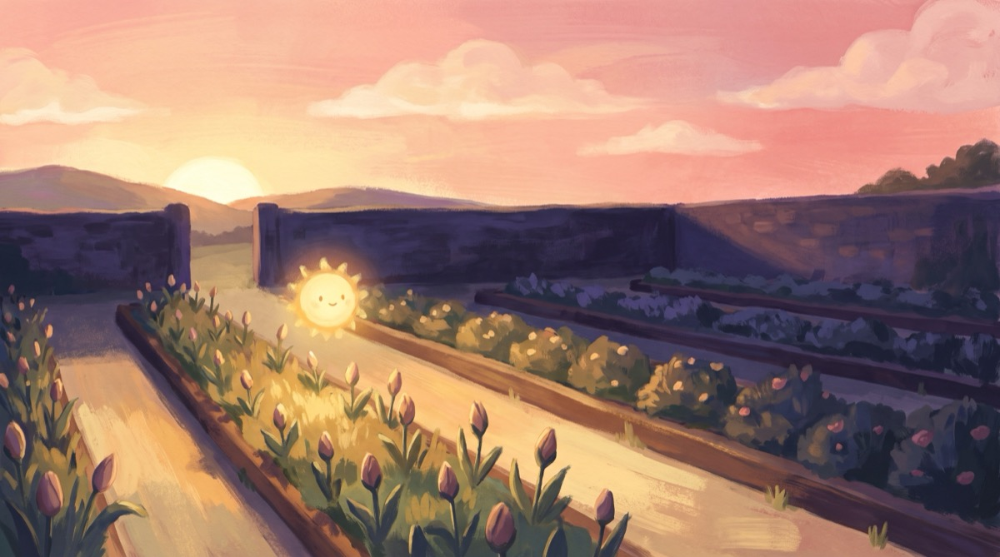

Sunthread
A calm one-line logic puzzle · Sakin bir tek çizgi bulmacası

EN
You are the morning light. Draw one unbroken thread across a sleeping garden, wake every tile and open the numbered buds in order. 120 hand-ordered gardens across six chapters, a new Garden of the Day every day, and every puzzle has exactly one solution you can reach by logic alone. Plays offline on iPhone and iPad.
TR
Sen sabahın ilk ışığısın. Uyuyan bir bahçede kesintisiz tek bir ışık ipliği çiz, her kareyi uyandır, numaralı goncaları sırayla aç. Altı bölümde 120 bahçe, her gün yeni bir Günün Bahçesi; her bulmacanın tek bir çözümü var ve tahmin gerektirmeden mantıkla bulunur. iPhone ve iPad'de internetsiz oynanır.